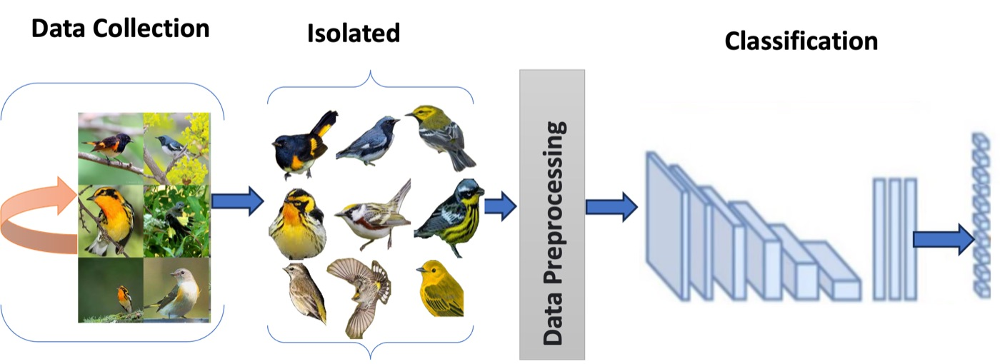

Reliable and efficient machine learning
Compact models, robust learning, synthetic data, meta-learning, decision fusion, and methods for limited, noisy, or imbalanced data.
PaperPh.D. Candidate · AI/ML Researcher
I am a Computer Science Ph.D. candidate at Fordham University who develops practical machine-learning systems across security, computer vision, language, medical imaging, and data-driven decision support.
I work across the full research cycle—from problem formulation and model design to rigorous evaluation, publication, and reproducible software. My record includes efficient and trustworthy learning, reinforcement learning, multimodal generation, fine-grained recognition, blockchain systems, bioinformatics, and forecasting.
Open to industry and academic roles · Available May 2027
Research profile
Across each domain, I focus on systems that are reliable, efficient, interpretable, and evaluated against real constraints.
Compact models, robust learning, synthetic data, meta-learning, decision fusion, and methods for limited, noisy, or imbalanced data.
PaperLearning-based cyber defense, reinforcement learning, symbolic safeguards, edge and IoT intelligence, robotics, and trustworthy distributed systems.
PaperFine-grained recognition, medical image segmentation, vision–language generation, object detection, and boundary-aware visual learning.
PaperArabic grammatical error correction, multi-omics patient subgrouping, autism diagnostics, sports forecasting, and cryptocurrency modeling.
PaperWhat I bring
Problem framing, model development, experiments, analysis, publication, and reproducible implementation.
Deep learning, reinforcement learning, graph learning, meta-learning, generative AI, multimodal systems, and classical ML.
Interdisciplinary collaboration, university teaching, peer review, and clear translation from technical results to practical value.
PythonPyTorchscikit-learnGitResearch reproducibility
Research software
Autonomous cyber defense
A reproducible neuro-symbolic reinforcement-learning system for autonomous DDoS mitigation, combining PPO-based control with symbolic safety constraints and interpretable policy extraction.
Fine-grained computer vision
An end-to-end workflow that prepares field imagery, segments subjects, creates standardized splits, and trains and evaluates a species classifier.

Selected work
Ali Alfatemi, Ahmed Alfaqeer, Mohamed Rahouti, Zakirul Alam Bhuiyan, Abdellah Chehri
IEEE Transactions on Network and Service Management · Vol. 23, pp. 7252–7261
Combines reinforcement learning with symbolic safety constraints and policy extraction for autonomous, interpretable cyber defense.
Aiman Solyman, Ahmed Elazab, Mohamed Rahouti, Ali Alfatemi, Zeinab Mahmoud
2026 IEEE International Conference on Image Processing · pp. 1–6
Combines transformer and graph representations with boundary-aware learning for medical image segmentation.
Ali Alfatemi, Mohamed Rahouti, Mohammed Aledhari, Nasir Ghani, Abdellah Chehri, Gwanggil Jeon
Applied Imagery Pattern Recognition · LNCS 16446, pp. 101–114
Integrates vision transformers with GPT-J to generate context-aware descriptions from visual content.
Ali Alfatemi, Hong Peng, Wentao Rong, Bin Zhang, Hongmin Cai
BMC Medical Informatics and Decision Making · Vol. 22, Article 190
Integrates multi-omics data on a Grassmann manifold to identify clinically distinct patient subgroups.
Professional record
Contact
I welcome conversations about industry research and engineering roles, postdoctoral and academic positions, and research collaborations.
aalfatemi@fordham.edu